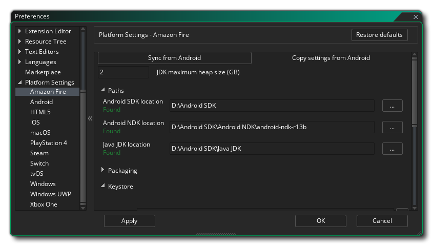
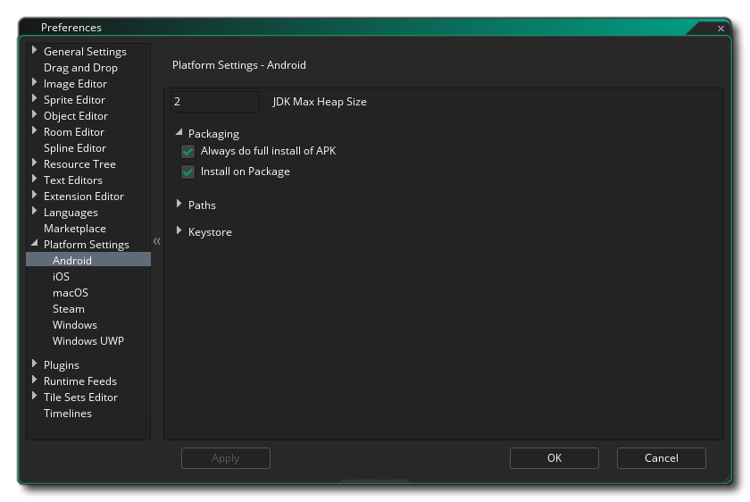
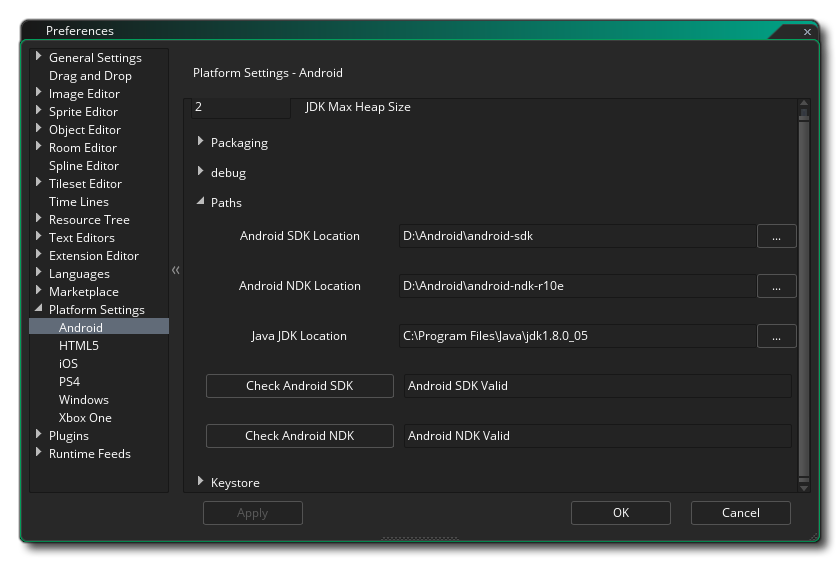
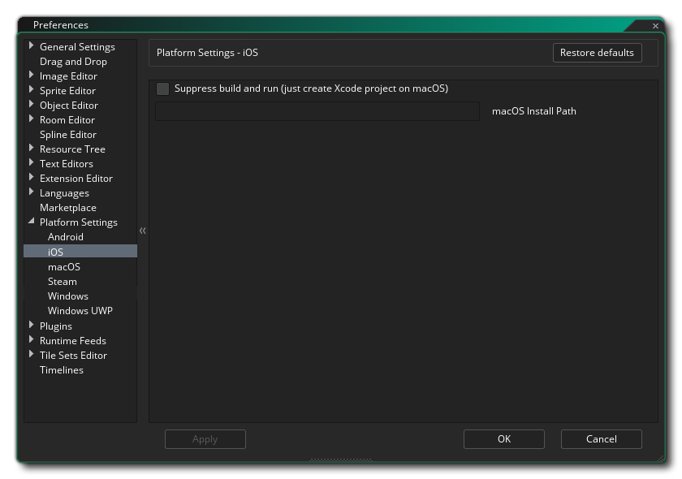
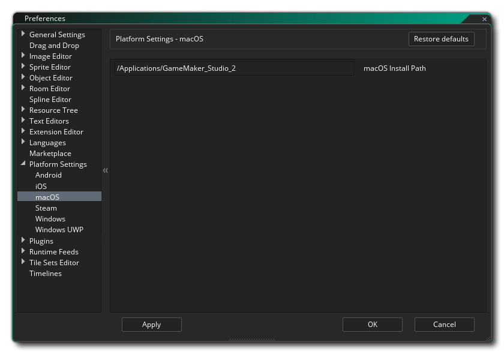
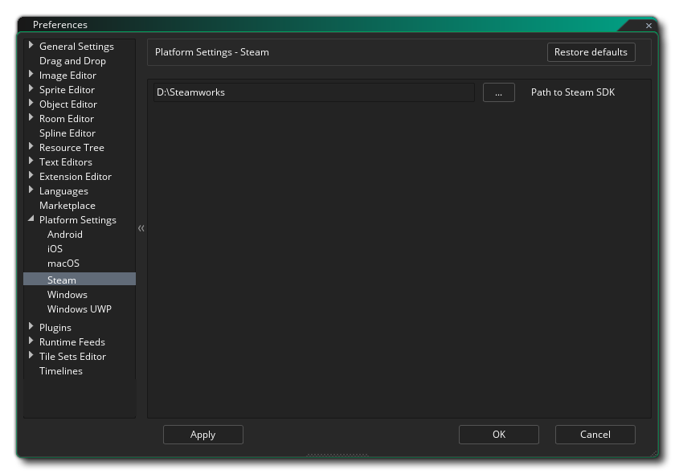
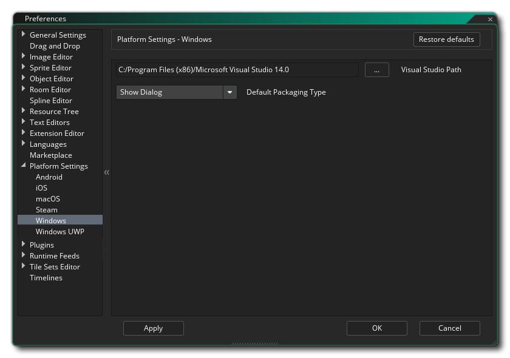
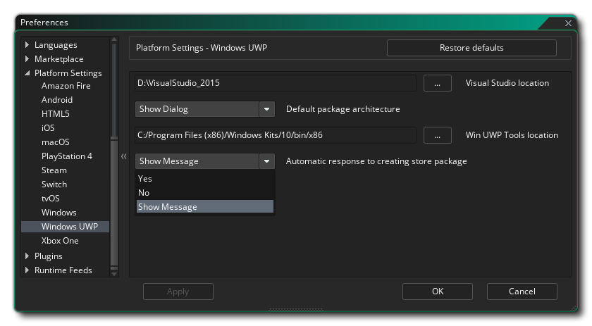

This section of the manual covers the different Platform Specific Preferences that need to be set up before you can compile your games to certain targets. These generally only need set up once to start with (although future updates to the runtimes may require you to change certain things, but these will be mentioned in the Release Notes) and are use to point to any SDKs that are required and set basic options for how you want GameMaker Studio 2 to compile your game projects for any given platform. Note that the platforms available will depend on the Licence that you have and not all of them may be available.
Below is a list of all the available target platforms and their preferences:
The Amazon Fire preferences are split into various sections listed below. A number of these refer to Android tools, since the AMazon Fire target is based off of Android and share the same SDK requirements. 
At the top of the preferences you have the option to synchronise the settings from the Android export. This is for those people that have the Mobile Licence and have already set up and used the Android export, since Amazon Fire uses almost the exact same build tools as Android. Just click this to import all the appropriate settings from Android, then check through them to make sure that they are correct.
Under the Synch button you can set the size of the Memory Heap for the Android JDK. Next you have to set up the various different Paths so that GameMaker Studio 2 knows where to look for the various tools required to build the final executable package and test your game. This is split into three sections for the Android SDK, Android NDK and Java JDK. These paths should have been filled in automatically for you, but should you have any issues you can click the button to the right to open the file explorer and manually select the locations for each element. You can find details of what versions are required for each of the SDK elements here. Paths should be validated as you apply them and a message will show "Found" or tell you of any errors (in which case you should revise all the information to make sure it is correct).
Below that you have the different Packaging options which are:
- Always do full install of APK: Flagging this will make GameMaker Studio 2 remove any previous runners of your game from your device, as well as all associated files (for example, *.ini files) from your test device before installing a new version of the game.
- Install on package: When this option is flagged, compiling a final executable *.apk package will also install it automatically on the currently selected target device.
Finally we come to the KeyStore. This is a file that will be used to "sign" all your Amazon Fire apps so please fill in all the details correctly and keep in mind that this file will be required to create and update all your Amazon Fire apps in the future, meaning that after setting it up it is advised to take a screenshot of the settings used and make a backup of the final file. If you lose this file you will not be able to update any existing games that have been uploaded to the Google Play store.
NOTE: The same keystore can be used for both the Android and Amazon Fire targets.
To create a new keystore file the following details are required:
- Filename: This is the name of the KeyStore file. NOTE: This is not your name or the company name, but the name of the file to be generated! If you already have a keystore file from previous projects then you can click the file browser button here and direct GameMaker Studio 2 to the old keystore file (or click the Import button). In this case, you must still fill out the rest of the required information (as it was when you first generated the file) but you must not click the Generate Key Hash button!. That will generate a new keystore file, overwriting the previous one.
- Common Name: This would normally be your name.
- Password: Your security password for the KeyStore file which must be at least six characters long.
- Alias: This is another name that can be used for the KeyStore file and should be different to the name entered above.
- Alias Password: Your alias security password for the KeyStore file which must be at least six characters long.
- Organisational Unit: The department within the company that you are a part of.
- Organisation: The name of your company.
- Location: The name of the town or city where you are based.
- Country: The standard two letter code for the country where you are based.
Once this information is filled in and you are happy with it, press the button marked Generate Key Hash for GameMaker Studio 2 to create the necessary KeyStore file. This may take a moment but once it is finished, it normally will not need to be changed again. Note that you can click the Import button to import a previously created keystore file (see the Filename section, above) and you can also retrieve the keystore SHA1 hash by clicking the Show Key Hash button. Pressing this will generate two special security hash keys directly linked to your keystore file that some web sites require for correct functionality (for example, Facebook, or Google Play for the Sha1 hash). Should you need this, simply press the button, then copy and paste the hash keys that are generated.
For further details on how to set up the required Amazon Fire SDKs, please see this article on the YoYo Games Knowledge Base.
The Android preferences are split into various sections listed below. 
At the top of the preferences you have the option to synchronise the settings from the Amazon Fire export. This is for those people that have the Mobile Licence and have already set up and used the Amazon Fire export, since Android uses almost the exact same build tools as Amazon Fire. Just click this to import all the appropriate settings from Amazon Fire, then check through them to make sure that they are correct.
Beneath the Sync button you have the option to set the size of the Memory Heap for the Android JDK. Next you have to set up the various different Paths so that GameMaker Studio 2 knows where to look for the various tools required to build the final executable package and test your game. This is split into three sections for the Android SDK, Android NDK and Java JDK. These paths should have been filled in automatically for you, but should you have any issues you can click the button to the right to open the file explorer and manually select the locations for each element. You can find details of what versions are required for each of the SDK elements here. Paths should be validated as you apply them and a message will show "Found" or tell you of any errors (in which case you should revise all the information to make sure it is correct).
Below that you have the different Packaging options which are:
- Always do full install of APK: Flagging this will make GameMaker Studio 2 remove any previous runners of your game from your device, as well as all associated files (for example, *.ini files) from your test device before installing a new version of the game.
- Install on package: When this option is flagged, compiling a final executable *.apk package will also install it automatically on the currently selected target device.
Finally we come to the KeyStore. This is a file that will be used to "sign" all your Android apps so please fill in all the details correctly and keep in mind that this file will be required to create and update all your Android apps in the future, meaning that after setting it up it is advised to take a screenshot of the settings used and make a backup of the final file. If you lose this file you will not be able to update any existing games that have been uploaded to the Google Play store.
NOTE: The same keystore can be used for both the Android and Amazon Fire targets.
To create a new keystore file the following details are required: 
- Filename: This is the name of the KeyStore file. NOTE: This is not your name or the company name, but the name of the file to be generated! If you already have a keystore file from previous projects then you can click the file browser button here and direct GameMaker Studio 2 to the old keystore file (or click the Import button). In this case, you must still fill out the rest of the required information (as it was when you first generated the file) but you must not click the Generate Key Hash button!. That will generate a new keystore file, overwriting the previous one.
- Common Name: This would normally be your name.
- Password: Your security password for the KeyStore file which must be at least six characters long.
- Alias: This is another name that can be used for the KeyStore file and should be different to the name entered above.
- Alias Password: Your alias security password for the KeyStore file which must be at least six characters long.
- Organisational Unit: The department within the company that you are a part of.
- Organisation: The name of your company.
- Location: The name of the town or city where you are based.
- Country: The standard two letter code for the country where you are based.
Once this information is filled in and you are happy with it, press the button marked Generate Key Hash for GameMaker Studio 2 to create the necessary KeyStore file. This may take a moment but once it is finished, it normally will not need to be changed again. Note that you can click the Import button to import a previously created keystore file (see the Filename section, above) and you can also retrieve the keystore SHA1 hash by clicking the Show Key Hash button. Pressing this will generate two special security hash keys directly linked to your keystore file that some web sites require for correct functionality (for example, Facebook, or Google Play for the Sha1 hash). Should you need this, simply press the button, then copy and paste the hash keys that are generated.
For further details on how to set up the required Android SDKs, please see this article on the YoYo Games Knowledge Base.
The HTML5 preferences have the following options:
- Default packaging type: When building a final HTML5 executable package, you can choose between Package as loose files - which will simply generate all the required files in a folder - or Package as Zip - which will create a compressed ZIP file that will have the game and any additional files within. By default you will be given a choice of which of these two options you wish to choose on compile, but you can set this preference to always use one or the other. Note that when this option is set to Show Dialogue, in the actual dialogue window that pops up on compile, choosing "Remember Packaging Option" will set this preference to the option you select.
The iOS preferences have the following options: 
- Default Team Identifier: Here you can add your default Team Identifier, as assigned to you by Apple. This Team Id will be used when your game files are sent to Xcode to build the app, and will permit Xcode to generate the required signing certificates. Note that this setting will be applied by default to all games built for iOS, but it can be over-ridden on a per-project basis from the General iOS Game Options.
- Suppress build and run: By default when you create an iOS project and then build a final executable package, GameMaker Studio 2 will build the package and then attempt to run it on any connected devices. Checking this option will suppress building the app and running it on the device and simply create an XCode project on the host Mac
- macOS Install Path: The install path for the project files on the build Mac.
The macOS preferences have the following options: 
- Default Team Identifier: Here you can add your default Team Identifier, as assigned to you by Apple. This Team Id will be used when your game files are sent to Xcode to build the app, and will permit Xcode to generate the required signing certificates. Note that this setting will be applied by default to all games built for macOS, but it can be over-ridden on a per-project basis from the General macOS Game Options.
The Steam SDK is used for Windows, Mac OS and Ubuntu (Linux) builds that are to be distributed through the Steam platform. This section contains the setup options required to get it working within your projects: 
- Path To Steam SDK: The system path to where you have installed the Steam SDK. Once you have set this path to the SDK, you will then need to activate Steam in the Game Options and then for each platform add the App ID.
The Windows preferences have the following options: 
- Visual Studio Path: This option is for pointing GameMaker Studio 2 to the MS Visual Studio installation on the build PC.
- Default Packaging Type: When building a final Windows executable package, you can choose between creating either an installer (using NSIS) or a compressed ZIP file that will have the game and any additional files within. By default you will be given a choice of which of these two options you wish to choose on compile, but you can set this preference to always use one or the other. Note that when this option is set to Show Dialogue, in the actual dialogue window that pops up on compile, choosing "Remember Packaging Option" will set this preference to the option you select.
The Windows UWP preferences have the following options: 
- Visual Studio location: This option is for pointing GameMaker Studio 2 to the MS Visual Studio installation on the build PC.
- Default package architecture: When building a final Windows UWP executable package, you can choose between creating either an x86, x64 or ARM package that will have the game and any additional files within. Here you can set a default value for the package to use or select Show Dialogue to have a window pop up when you hit the compile button asking which to choose. In general you want to target x86 for Windows 10 computers, x64 for Xbox One and ARM for Windows 10 devices.
- Win UWP Tools location: This option is for pointing GameMaker Studio 2 to the UWP tools installation path on the build PC.
- Automatic response to creating store package: When building a final Windows UWP executable package, you will be asked if you want to create a store package or not. You can set this option to automatically skip this pop-up using either Yes or No by default, or you can set Show Dialogue to have the window always pop up when you hit the compile button.


Note that apart from setting up these preferences, you will also need to set up the devices that some of these platforms target, otherwise you may not be able to compile nor test your projects. See the section on Compiling and the section on the Device Manager for more information.
The manual does not show the various Console preferences due to the different legal restrictions maintained by the different companies. If you have a Console Licence, then you can get this information form the YoYo Games Helpdesk, but you must first contact YoYo Games with your console ID email and request permission to view the different sections.